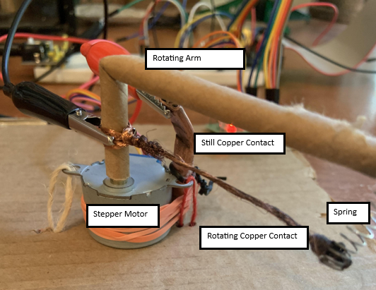

Preston's Internet-Controlled Switch
Objective/Overview
My Goal in this project is to reliably and efficiently control a switch capable of high currents at a distance, with the ability to rapidly toggle the switch. I plan to do this using a Raspberry Pi 4, which contains a set of general purpose input output (GPIO) pins that will allow me to use Python Programs to send low-current signals to circuitry. There are four major components to my approach in creating this switch:
- SSH Tunnel for Remote Access: I will host an SSH server on the Raspberry Pi to allow for Python programs to be executed remotely, and for relevant files and information to be retrieved. I will also utilize Git to create programs to be downloaded onto the pi with the git clone command executed over the SSH.
- Stepper Motor to Provide Work: A signal will be provided to a driver that will allow for the application of a significant torque in the stepper motor. This torque will provide the work necessary to connect two surfaces of copper together and allow current to flow.
- An Analog to Digital Converter to Test the Switch: An analog to digital converter will be placed in series with a resistor in a circuit so that to voltage drop across the resistor can be measured, which in turn will allow for the determination of whether the circuit is open or closed. This can be used to collect data to find the reliability and maximum speed of the switch when it is toggled.
- A Python-Controlled Camera for Remote Monitoring: A camera was interfaced with the Pi so that the entire setup could be visually monitored remotely.
Implications/Connection to Future Projects
By physically bringing together two surfaces of copper with sufficient force to maintain good contact, I will be able to transmit a very large amount of current at will, provided I use a capable power supply. This will assist me in any process in which I would like to expend a large amount of energy to drive a chemical or physical transformation where a binary switching of current is sufficient as a control mechanism. For example, I could use nichrome wire to create a large amount of heat for use in a kiln, and monitor the temperature to ensure the proper temperature is achieved. There are also many applications in electrochemical devices such as sodium hydroxide cells, water splitting cells, and bleach cells, where I might want to ensure that the cell does not heat itself too much.
Setup
The switch mechanism uses a stepper motor to push a copper wire against a section of copper tubing, which remains fixed. A spring is used to allow for a gradual building of tension with respect to the rotation angle, allowing for the contact to be made more firm if necessary. Insufficient force of contact can result in no contact, or an unreliable contact. Alligator clips are used to carry the current to and from the copper contacts. A photo of the switch mechanism is shown below.
The breadboard contains the circuit for the ADC, power supply, and the circuit to be used to supply a current through the switch. The ADC is powered with 3.3V, and provides 8-bit responses back to the Raspberry Pi corresponding to the fraction of the voltage at the analog input to that of the 3.3V power supply. This allows for the voltage to be measured at the analog input as long as it is under 3.3V, and that it has a precision of measurement of 3.3V / 256. For the purpose of monitoring the switch, the voltage will only be ~3.3V when the switch is open, and ~0V when the switch is closed. The breadboard setup is shown below.
The camera was set up to face downwards at the switch setup. This is shown in the photo below.

An additional 3 circuits were set up to control a multi-colored LED for diagnostic purposes after I photographed the other circuitry, so this circuit is not shown for sake of simplicity.
Testing
After moving to a new location (Raising Canes because their caniac combo is delicious) on a different network than the Pi (my mobile hotspot), the first test was to turn on the LED to ensure that the GPIO board and camera system were responding correctly. The results were successful and the photos are shown below.
Next, I tried running a program used to open and close the switch with 10 seconds between each movement. This failed, because the 9V battery ran out of power. Upon replacement, the program and circuit worked as expected and the results are shown below.